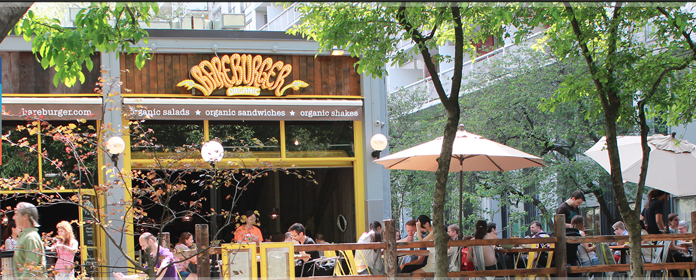
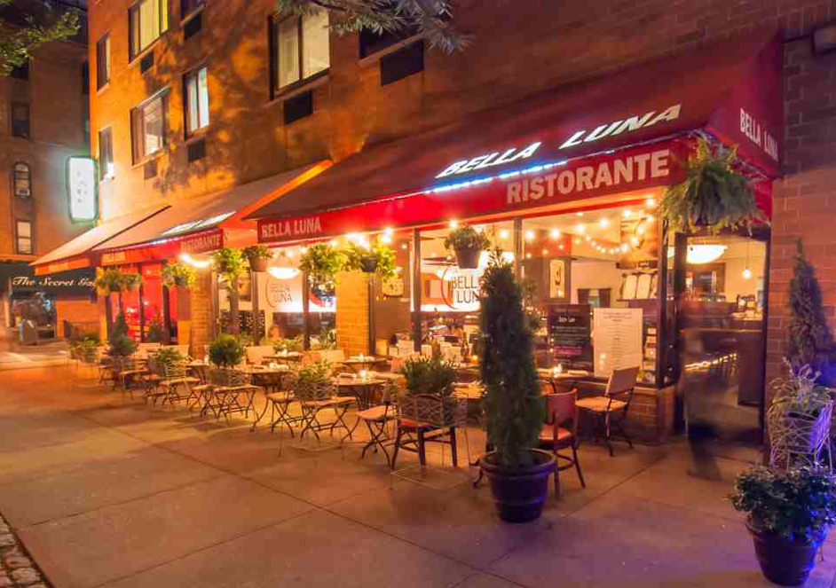
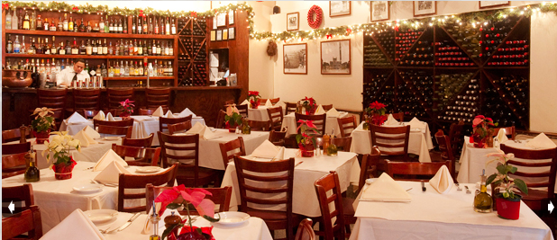
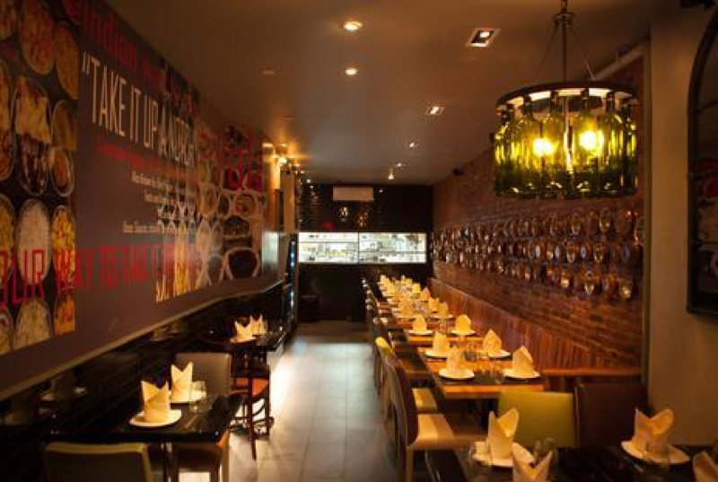
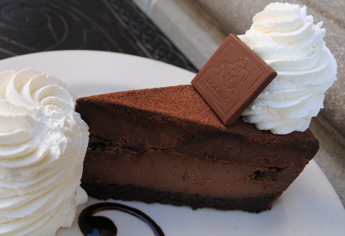

Home About Me Brands A-Z Restaurants What I've Learned Get Connected
| |
Home About Me Brands A-Z Restaurants What I've Learned Get Connected
|
| My Favorites |
RestaurantsBareburgerMy aunts introduced to me to this place in the beginning of the Fall semester and I fell so in love with it that I have been back multiple times since. Taking from its name, Bareburger serves all natural, organic burgers and are extremely good about catering to any food sensitivities. There are typical beef burgers but turkey, lamb, elk, and chicken are all available to be put on a bun and served. There are also bare wiches and bare salads which can be on their own or put along with one of their burgers. What I usually order is a make-it-yourself bareburger. I choose my “style” first which is basically what type of things I have on the burger. I normally have the Smokehouse portabella which is a portabella mushroom with mozzarella. My sister always has the mediterranian burger which has lettuce and cucumber and my grandpa likes the good old classic burger so there is a style for everyone. Once I have the style, I choose the protein that I want to go on it. I typically order the grilled chicken; it goes really well with the mushroom. To finally finish the order, you must choose the type of bread you want and for obvious reasons, I chose the gluten free bread. Now some reasons as to why I love this place besides how good the food is. I love that the menu specifically indicates if an item in gluten free. Every main dish, side order, and extra topping is labeled which makes our lives as tricky customers easier. Also, when you order something gluten-free, your waiter always asks you if you have an intolerance. This means that they will not contaminate your food with other gluten-filled foods that are ordered. Now, there is no guarantee that something might go wrong in the kitchen, and this goes for every restaurant, but they certainly do keep the mistakes to a minimum. Every time that I have gone there, I have had an excellent experience with great food and service. I’ve been to this location at least 4 or 5 times and the one below just once when it was warm enough to sit outside. Both were great and the food was the same at both. 153 8th Avenue New York, NY 10011 (Between W 17th and W 18th street) 535 Laguardia Place Manhattan, NY 10012  Bella LunaThis is my cousins favorite restaurant to take my sister and I when they want to catch up. It is a very Italian restaurant that is known for its pasta and wine. The atmosphere is very sophisticated and the neighborhood is very upperclass which is extremely exciting for a college kid from the Bronx. They have really good salads as well as gluten free pasta. I’ve had the Bella Luna salad as well as the Sicillian salad and both were a good size and tasted amazing. I’ve also ordered Penne Al Fresco gluten-free and the noodles had a great texture. 584 Columbus Ave, New York, NY 10024  PappardelleThis is another Italian restaurant that my aunts love. I especially love this restaurant because it has a specific gluten-free menu for lunch and dinner. The entire “normal” menu has been made to be gf and it has so many delicious items on it. As an Italian restaurant, it has the classic pasta and pizza. The pasta bisanzio as well as the pasta coliflor and both had great texture and taste. Every vegetable is fresh and you can definitely tell. Pappardelle also makes a great pizza. I’ve had both the classical and the margherita pizza and loved both of them. The crust, which I’ve found to be one of the hardest things to make well gluten free, is amazing. It is flaky and not too tough and combined with the fresh toppings, their pizza is something you can break your diet for. After you’ve stuffed yourself full with pasta and pizza, the torta di cioccolato is a flourless chocolate cake with gelato and caramel sauce that is to die for. I love it because it is naturally gluten free and tastes amazing. Again, break your diet for this, it will be worth it. 16 Columbus Ave, New York, NY 10023  Malai MarkeThis is an indian restaurant that I found on the lower east side of New York that is really great if you love indian food. The space is small but the food is really good. I’ve only been there once but the menu has typical indian foods on it. When I was there I had the ALOO SAAG which is a curry with potatoes and ginger. It came with white rice and was delicious. CHANA SAAG, which is what my aunt had, is spinach and chickpeas with ginger was just as tasty. My sister had the Chicken Chutenywala which is chicken with mangoes and green chutney and she also gave it a thumbs up. Indian food is a great go-to for gf food because the staple meal is rice with a protein. Some chutneys or chilies have gluten added to them as a thickener but your waiter can tell you the specifics. The food here was authentic indian food that wasn’t too spicy but really good nonetheless.  Cheesecake FactoryNow I know this is not a great unique NYC restaurant but it is good for guests or when you go out of town. I just went here for the first time in November and was surprised at how accommodating they were about my gf allergy. There is a special gf menu that you can request which is still just as large as the normal one. I had the Four Cheese pasta which was very good. The portion was huge and I couldn’t finish it all, but the pasta was well cooked. Of course, you can’t go to the cheesecake factory and not have cheesecake. There is just one option that is gf, which is the Godiva Chocolate Cheesecake. It is a flourless chocolate cheesecake with chocolate mousse and it tastes pretty darn good if I have to say so myself. Again, the portion was huge so I split it with a friend. The great thing about this chain is that they are everywhere so if you are in need of a place to eat, here is one option.  |